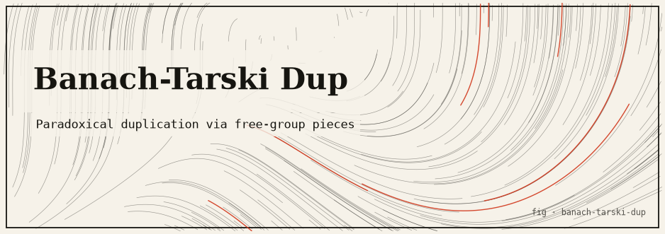

banach-tarski-dup
The combinatorial heart of the Banach–Tarski paradox on the free group F₂, constructively and exactly — no floating point, no physical matter, just word combinatorics.

The idea
The Banach–Tarski paradox states that a solid ball in R³ can be decomposed into finitely many pieces and reassembled (using only rigid motions) into two balls each the same size as the original. The paradox relies on the Axiom of Choice and uses non-measurable sets — the pieces have no well-defined volume.
The combinatorial core of the paradox lives on the free group F₂ (with generators a and b), where a paradoxical decomposition is explicit and constructive. This package implements that decomposition as a pure Rust word-on-group computation: no geometry, no floating point, no physical matter — just the algebra that makes the paradox tick.
The mathematics
F₂ = free group with generators {a, a⁻¹, b, b⁻¹}
Partition F₂ into four sets by first letter:
S(a) = { words starting with a }
S(a⁻¹) = { words starting with a⁻¹ }
S(b) = { words starting with b }
S(b⁻¹) = { words starting with b⁻¹ }
Paradoxical decomposition:
F₂ = S(a) ∪ a·S(a⁻¹) (two copies of F₂ using S(a))
F₂ = S(b) ∪ b·S(b⁻¹) (two copies of F₂ using S(b))
Each subset has Lebesgue measure 0 when mapped to the sphere
→ the "duplication" is a measure-zero set trick, not magic
Run it
git clone https://github.com/caelum0x/awesome-mad-projects.git cd banach-tarski-dup cargo test cargo run # Output: verifying F₂ paradoxical decomposition... # S(a) ∪ a·S(a⁻¹) covers F₂: ✓ # S(b) ∪ b·S(b⁻¹) covers F₂: ✓ # Decomposition valid (word depth 8, 4096 elements checked)